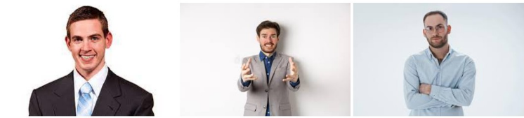

About the Website
Virtual Marathon adalah website yang telah kami buat dengan tujuan untuk memberi keuntungan bagi para penggemar lari marathon. Dengan adanya website kami menyediakan kesempatan para pelari untuk mendaftar untuk marathon manapun kapan pun. Website ini bisa diakses kapanpun dengan adanya website ini kami ingin memberi kemudahan dan berbagai pilihan track marathon yang orang bisa jalani dan ikut partisipasi. Dengan sistem pembayaran yang mudah
Inilah para pendiri kami, dari yang kiri adalah Wilson Nathanael. Lalu yang tengah Reynaldi Lukas dan yang kanan adalah Dionisius Yoga. Website ini dibuat sebagai tugas akhir salah satu mata kuliah mereka
Visi
Website Virtual Marathon kami akan menjadi media utama dalam kegiatan marathon
Misi
1. Memberi berbagai event yang menyediakan rute marathon unik dalam waktu terbatas untuk meingkatkan
2. mengimplementasikan penggunaan GPS untuk mempermudah dalam perhitungan jarak lari yang telah ditempuh
3. melakukan kerja sama dengan berbagai yayasan untuk melakukan event marathon untuk donasi untuk amal